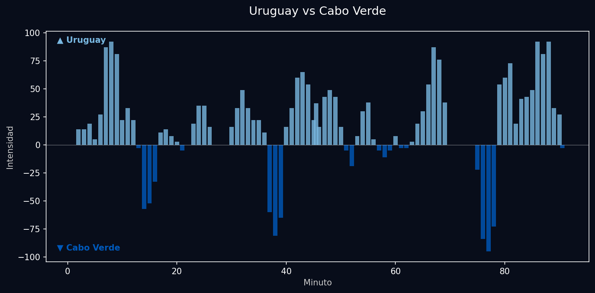
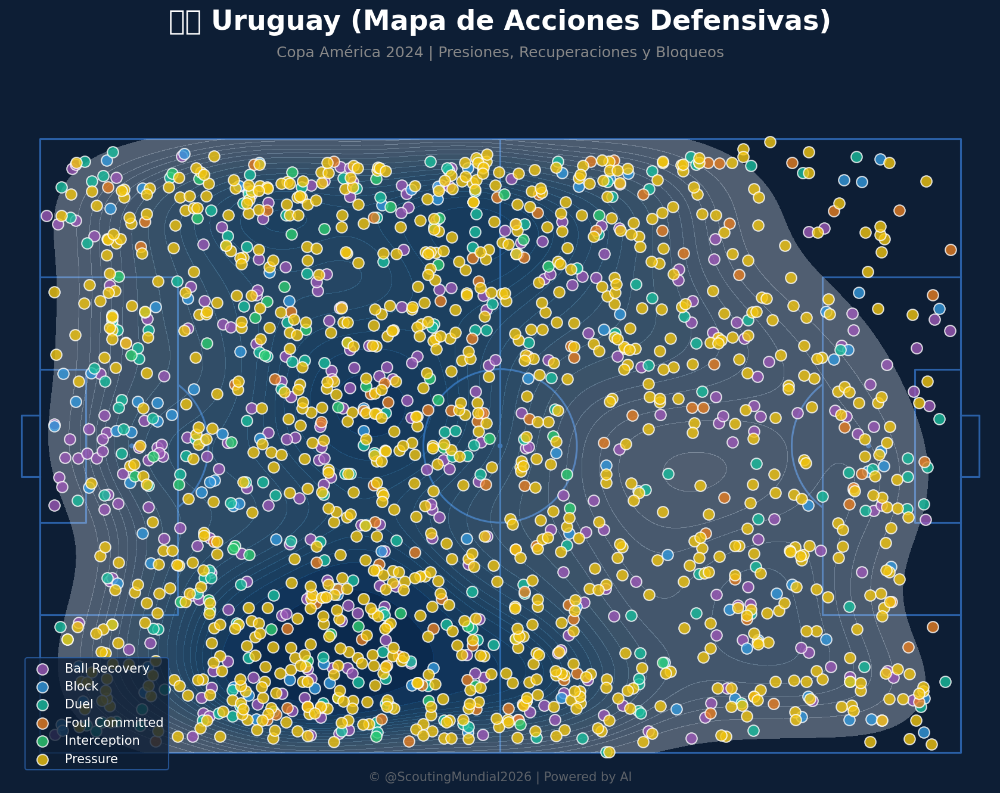
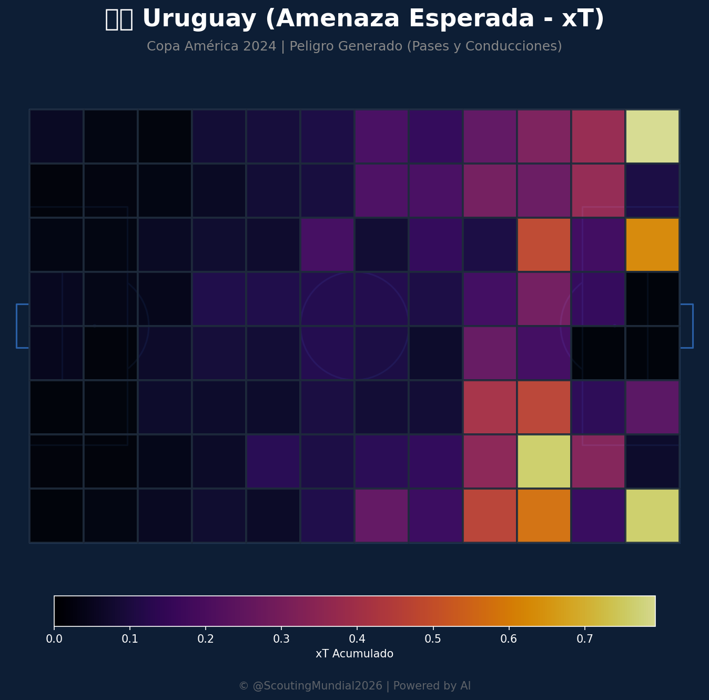
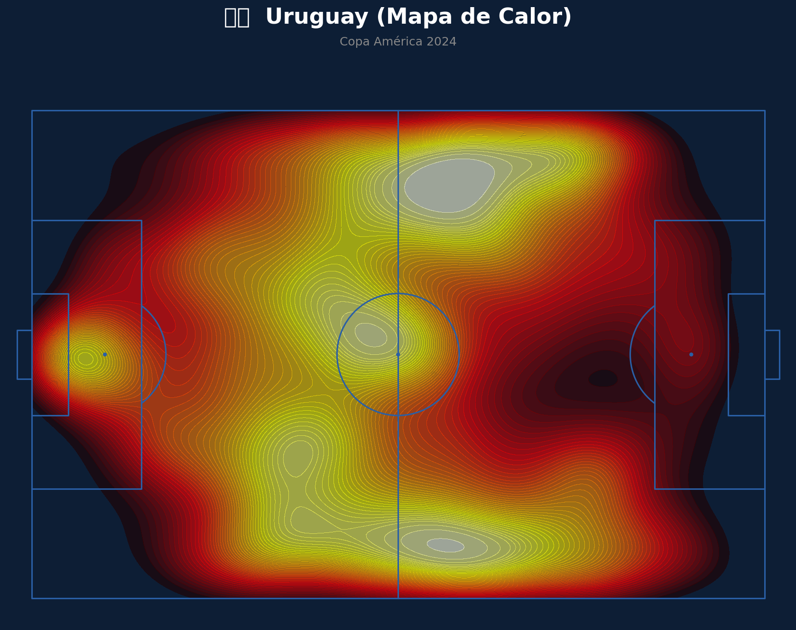
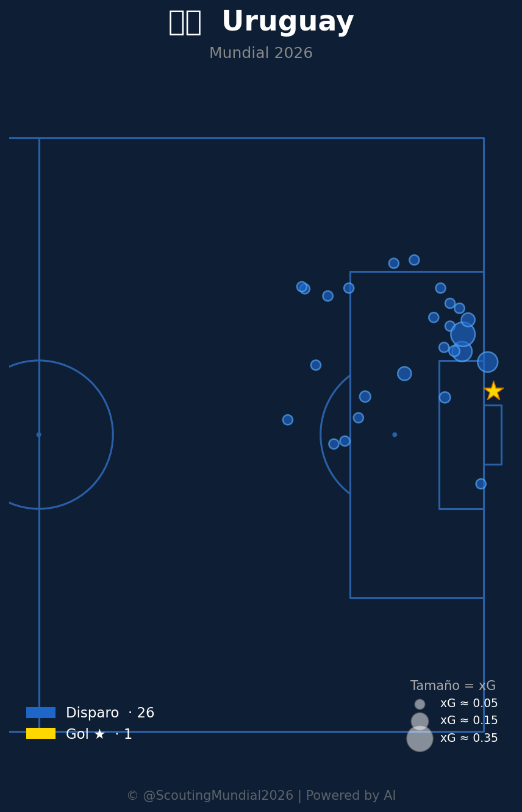
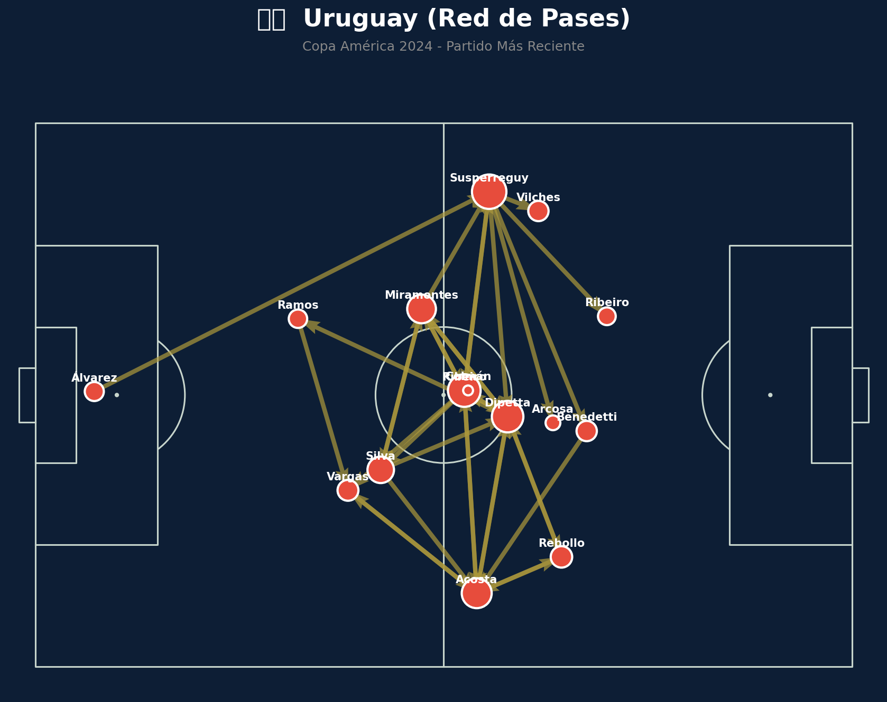
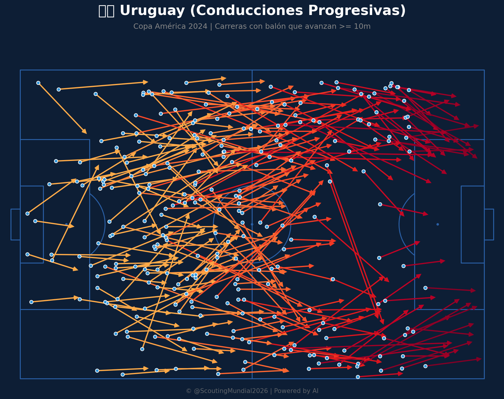
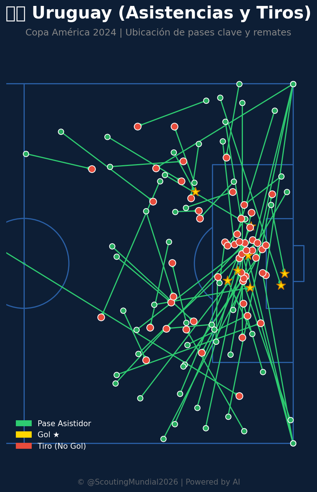
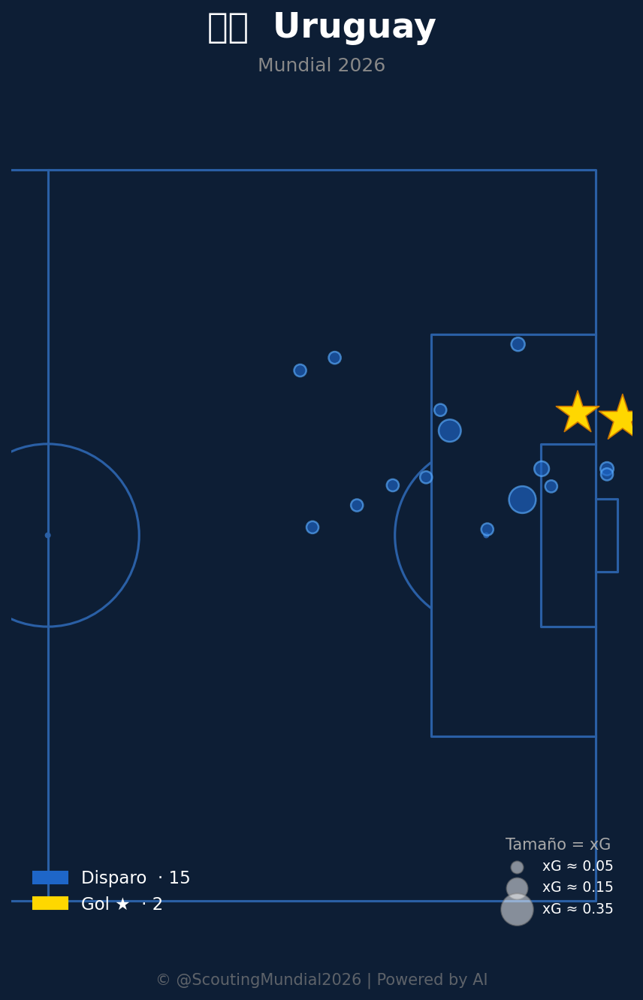

📝 Crónica y Análisis Posterior (Post-Partido)
❌ PREDICCIÓN FALLIDA
⚽ Resumen del Partido (Resultado Real: Uruguay 2 - 2 Cabo Verde)
Uruguay y Cabo Verde firmaron un vibrante empate 2-2 en el Toyota Stadium en el duelo más emocionante del Grupo H. La escuadra charrúa tomó la delantera temprano gracias a una presión alta efectiva, pero los "Tiburones Azules" reaccionaron a base de descaro y verticalidad por las bandas, logrando remontar el marcador en la segunda mitad mediante transiciones rápidas y errores en la zaga uruguaya. Con el 2-1 en contra, Uruguay adelantó líneas de forma desesperada y consiguió rescatar la igualdad en los minutos finales, sentenciando un empate que deja el grupo completamente abierto.
🔮 Impacto en el Grupo H y Proyecciones para la Ronda 3
- Ajuste del Algoritmo: Tanto Uruguay como Cabo Verde alcanzan los 2 puntos (0 DG). Uruguay se ubica en el segundo puesto por mayor cantidad de goles anotados (3 vs 2), mientras que Cabo Verde queda en la tercera posición.
- Proyección de la Tercera Fecha:
- España vs Uruguay: Uruguay se juega la vida ante el líder del grupo, obligado a sumar para asegurar su permanencia.
- Arabia Saudí vs Cabo Verde: Cabo Verde buscará hacer historia sellando su pase frente a una necesitada Arabia Saudí.
📈 Análisis del Match Momentum
El partido fue sumamente dinámico y disputado. Uruguay dominó las fases de posesión e intensidad territorial durante el 67.4% del juego, con un pico de 92.00 en el minuto 8'. Sin embargo, Cabo Verde fue sumamente incisivo en sus fases ofensivas (21.7% de dominio), alcanzando un pico de 95.00 en el minuto 77' que puso en jaque a la defensa uruguaya y forzó el dramático 2-2 final.
Gráfico: Match Momentum (Intensidad de Ataque)

🇺🇾 Uruguay: Análisis Táctico
Ventajas
- Juego Posicional Superior (50% de Pases Cortos y Tácticas): Uruguay exhibe un sistema de posesión muy orientado a superar al rival, manteniendo la posesión para progresar en bloque a través de la salida limpia desde atrás y la amplitud del campo.
- Dominio Técnico Individual en Defensa (Alto Volumen de Juego): La organización defensiva por fases ayuda a reducir los errores individuales. El equipo prioriza la circulación fluida en corto y en largo para proteger las transiciones.
- Juego Rítmico y Estratégico: Uruguay aprovecha su capacidad para realizar pases rápidos y creativos en el círculo central y conectar con los extremos para romper la estructura rival.
Desventajas
- Defensa Vulnerable ante la Presión: La cobertura de los laterales ante transiciones directas y contraataques verticales del rival puede verse comprometida si el bloque queda muy adelantado en fase de ataque.
- Dependencia de la Efectividad del Nueve: El volumen de posesión puede volverse plano y falto de profundidad si el delantero de referencia en el área no está preciso en la definición de las jugadas.
🇨🇻 Cabo Verde: Análisis Táctico
Ventajas
- Circulación Abierta en Transiciones: Cabo Verde busca asociarse con rapidez y verticalidad para progresar y romper líneas defensivas.
- Enfoque de Ataque Rápido y Vertical: El juego exterior es punzante, permitiendo desbordar por los costados para romper el ritmo defensivo rival.
- Capacidad de Movimiento y Repliegue: Dinamismo físico para realizar coberturas por banda y lanzar contraataques veloces tras forzar el error.
Desventajas
- Dificultad en Posesión Estática: El juego asociativo se vuelve predecible y propenso a pérdidas en zonas de iniciación cuando el rival repliega sus líneas y no concede espacios para correr.
- Desgaste Físico por Ritmo de Juego: La alta intensidad física propuesta en las transiciones suele pasar factura en los tramos finales del partido.
📊 Pizarras y Gráficos Tácticos
Mapa Defensivo (Uruguay)

Mapa Defensivo (Cabo Verde)

Amenaza Esperada xT (Uruguay)

Amenaza Esperada xT (Cabo Verde)

Mapa de Calor (Uruguay)

Mapa de Calor (Cabo Verde)

Mapa de Tiros (Uruguay)

Mapa de Tiros (Cabo Verde)

Red de Pases (Uruguay)

Red de Pases (Cabo Verde)

Conducciones Progresivas (Uruguay)

Conducciones Progresivas (Cabo Verde)

Mapa de Asistencias (Uruguay)

Mapa de Asistencias (Cabo Verde)

Mapa de Tiros (Uruguay)

Mapa de Tiros (Cabo Verde)

 Cabo Verde
Cabo Verde